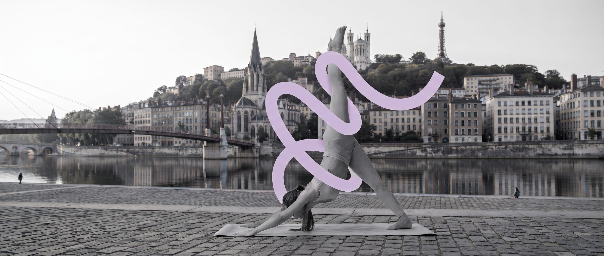

26 studios vérifiés à la main · 315 créneaux par semaine · du 1er au 9e arrondissement et à Villeurbanne
Un annuaire pensé pour trouver un cours près de chez vous, au bon moment.
Chaque studio référencé est visité et vérifié, pas de fiche fantôme ni de cours annulé.
Matin, midi ou soir : le planning couvre toute la semaine, tous les quartiers.
Vinyasa, Hatha, Yin, Iyengar et plus : chaque style a sa couleur pour s'y retrouver.
De la Croix-Rousse à Confluence en passant par Villeurbanne : trouvez le studio le plus proche de chez vous.
Un studio historique en plein cœur de la Presqu'île : Hatha yoga traditionnel, le même professeur toute la saison, des groupes à taille humaine (8 à 14 élèves).
Voir le site du studio →Une méthode précise et progressive, avec accessoires (briques, sangles, chaises) pour adapter chaque posture. Cours pour tous niveaux, du débutant aux séniors.
Voir le site du studio →Ouvert fin 2024 à la Croix-Rousse : Vinyasa, Hatha, Yin, yoga doux et ateliers bien-être dans un lieu intimiste (10 personnes max par cours).
Voir le site du studio →Localisez les studios référencés dans les arrondissements de Lyon et à Villeurbanne.
Carte © OpenStreetMap — emplacements approximatifs, 26 studios positionnés sur 26 vérifiés.
Extraits d'avis Google publiés sur les sites des studios eux-mêmes.
« Thierry est un véritable passionné qui transmet avec bienveillance son enseignement en s'adaptant à chacun. »
« Plus de 15 années de pratique dans cette école et toujours une belle qualité d'enseignement. Salle très bien équipée. »
« Un yoga de qualité, une salle bien équipée, des groupes de niveaux, et des enseignants attentifs et bienveillants. »